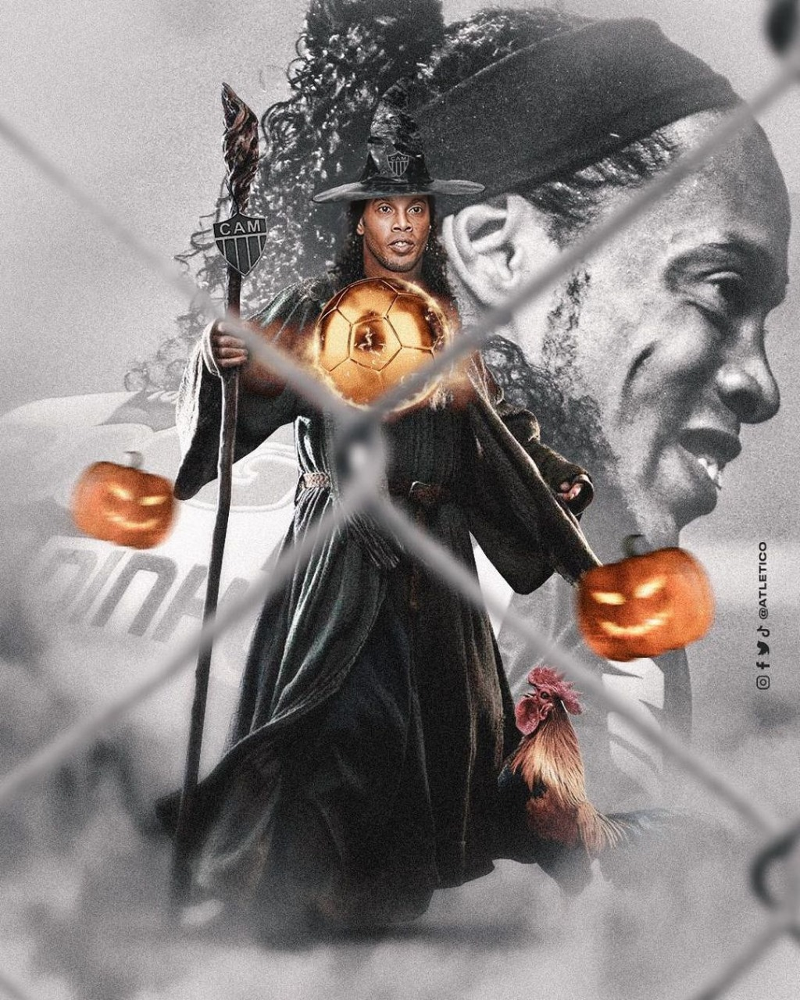
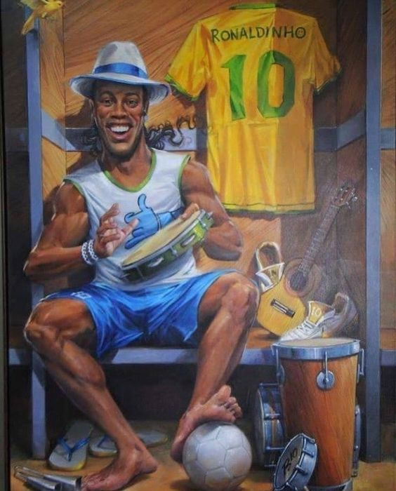

Sobre o bruxo
Ronaldinho Gaúcho é um famoso ex-jogador de futebol brasileiro. Seu nome verdadeiro é Ronaldo de Assis Moreira. Ele nasceu em Porto Alegre, no estado do Rio Grande do Sul, Brasil, em 21 de março de 1980. Ronaldinho é conhecido por suas habilidades excepcionais no futebol, especialmente sua habilidade de driblar, passar e marcar gols de maneiras espetaculares. Além de suas habilidades técnicas incríveis, Ronaldinho também era conhecido por sua personalidade alegre e carismática, ganhando admiradores em todo o mundo. Sua contribuição para o futebol é considerada significativa, e ele é frequentemente lembrado como um dos jogadores mais talentosos e carismáticos de sua geração.
Infância e juventude
Na infância, a sua principal diversão era brincar com a bola de futebol, junto dos seus melhores amigos. Com sete anos começou a jogar na escola de futebol infantil do Grêmio. Aos oito anos seu pai morreu, e ele recebeu apoio de sua mãe, da sua irmã, e passou a enxergar seu irmão mais velho como figura paterna. Desde pequeno, Ronaldinho já demonstrava habilidade com a bola, como se pode ver em vídeos caseiros da sua família. Entre seus ídolos, além do seu irmão Assis, encontram-se Rivaldo e Ronaldo (com os quais ganhou a Copa do Mundo FIFA de 2002), Valdo, Romário, Zico, Rivellino, Maradona e Pelé.
Carreira
Início:
Ronaldinho começou sua carreira profissional no Grêmio, um clube de futebol brasileiro, onde jogou de 1998 a 2001. Durante seu tempo no Grêmio, ele mostrou seu talento excepcional, habilidades de dribles e visão de jogo impressionantes, que chamaram a atenção de clubes europeus.
Sucesso Internacional:
Em 2001, Ronaldinho se transferiu para o Paris Saint-Germain (PSG), na França, onde continuou a se destacar como um dos jogadores mais habilidosos do mundo. Sua passagem pelo PSG ajudou a solidificar sua reputação como uma estrela em ascensão.
Barcelona:
No entanto, foi durante sua passagem pelo Barcelona, de 2003 a 2008, que Ronaldinho alcançou seu auge. Ele se tornou uma lenda no clube catalão, encantando os fãs com seu estilo de jogo único, dribles desconcertantes e habilidades incríveis. Ronaldinho foi fundamental na transformação do Barcelona em um dos clubes mais dominantes da Europa. Durante seu tempo no Barcelona, Ronaldinho conquistou inúmeros títulos, incluindo duas vezes o prêmio de Melhor Jogador do Mundo da FIFA (Ballon d'Or) em 2004 e 2005. Ele também foi fundamental na conquista da Liga dos Campeões da UEFA em 2006, além de vários títulos da La liga e da Supercopa da Espanha.
Seleção Brasileira:
Ronaldinho também teve uma carreira de sucesso na seleção brasileira. Ele foi uma parte importante da equipe que venceu a Copa do Mundo FIFA de 2002, no Japão e na Coreia do Sul, formando uma parceria memorável com Ronaldo Nazário. Ele também conquistou a Copa América em 1999 e a Copa das Confederações em 2005 com o Brasil.
Pós-Barcelona:
Após deixar o Barcelona em 2008, Ronaldinho jogou por clubes como Milan (Itália), Flamengo e Atlético Mineiro (Brasil), entre outros. Embora seu desempenho tenha diminuído em seus últimos anos de carreira, Ronaldinho sempre será lembrado como um dos jogadores mais talentosos e carismáticos da história do futebol.
Legado:
Ronaldinho Gaúcho é conhecido por seu estilo de jogo alegre e habilidades únicas, incluindo sua precisão nos passes, dribles mágicos e chutes poderosos. Ele transcendeu fronteiras e é admirado não apenas por sua habilidade no campo, mas também por sua personalidade cativante e sua capacidade de unir os fãs do futebol ao redor do mundo. Ronaldinho deixou uma marca indelével no esporte e continua sendo uma figura querida para os amantes do futebol em todo o mundo. Ele é lembrado como um dos melhores jogadores de sua geração e um verdadeiro embaixador do futebol brasileiro.
Principais conquistas
| Título | Ano de aquisição |
|---|---|
| Campeonato Gaúcho | 1999 |
| Copa Sul | 1999 |
| Supercopa da França | 2001 |
| La Liga | 2004-05, 2005-06 |
| Liga dos Campeões da UEFA | 2005-06 |
| Supercopa da Espanha | 2005 |
| Troféu Joan Gamper | 2003, 2004, 2005, 2006 |
| FIFA Club World Cup | 2006 |
| Campeonato Italiano | 2010-11 |
| Campeonato Carioca | 2011 |
| Copa Libertadores da América | 2013 |
| Campeonato Mineiro | 2013 |
| Copa América | 1999 |
| Copa do Mundo FIFA | 2002 |
| Copa das Confederações | 2005 |
| Melhor Jogador do Mundo FIFA | 2004, 2005 |
| Bola de Ouro | 2005 |
| Bola de Ouro da Copa das Confederações | 1999 |
Principais Conquistas em ordem cronológica
- Campeonato Gaúcho: 1999
- Copa Sul: 1999
- Copa América: 1999
- >FIFA Confederations Cup Golden Ball (Bola de Ouro da Copa das Confederações): 1999
- Trophée des Champions (Supercopa da França): 2001
- Copa do Mundo FIFA: 2002
- Troféu Joan Gamper: 2003
- FIFA World Player of the Year (Melhor Jogador do Mundo FIFA): 2004
- Troféu Joan Gamper: 2004
- La Liga: 2004-05
- Troféu Joan Gamper: 2005
- Copa das Confederações: 2005
- FIFA World Player of the Year (Melhor Jogador do Mundo FIFA): 2005
- Ballon d'Or (Bola de Ouro): 2005
- Troféu Joan Gamper: 2005
- Supercopa da Espanha: 2005
- Liga dos Campeões da UEFA: 2005-06
- Troféu Joan Gamper: 2006
- FIFA Club World Cup: 2006
- Serie A (Campeonato Italiano): 2010-11
- Campeonato Carioca: 2011
- Campeonato Mineiro: 2013
- Copa Libertadores da América: 2013
Curiosidades
- Especialista na bola parada, popularizou a cobrança de falta por baixo da barreira.
- Além do bom futebol, dentro de campo destacava-se pelo jeito alegre e carismático.
- Foi preso por utilizar passporte falso no Paraguai.
- Venceu um torneio no presídio, marcando 5 gols em uma goleada de 11 a 2.
- Foi um dos principais exemplos para o messi, no início da carreira do argentino.
- Foi considerado o melhor jogador do mundo em 2004 e 2005.
- Ronaldinho manteve seu empresário desde a base, tendo o seu irmão mais velho como responsável.
- Em abril de 2022, foi lançado "Ronaldinho: O Homem mais Feliz do Mundo", documentário lançado no FIFA+.
- Foi considerado ídolo no Atlético-MG.